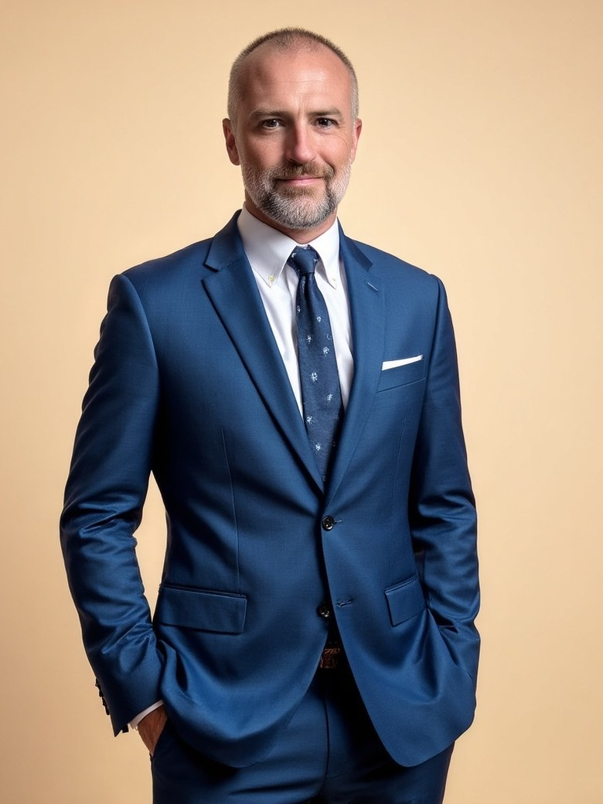

The London School of Economics
An MSc in sociology, and a way of seeing the structure underneath the world. Organizations are not collections of personalities. They are systems with shapes, and the shapes predict the behavior.
About
I had leaders who built me, and I had leaders who struggled. Not for lack of will or talent. Most were promoted past their preparation, and I watched it from the inside.
The teacher who ran a great classroom does not automatically run a great school. The scientist who owned one corner of a field is not equipped to lead the rest. The engineer who shipped on time is not ready for the people who write the code. The founder who built the product is not ready for the company it built.
They taught me as much as the leaders who shaped me. It just took longer to see it. What they showed me was what was missing: the system nobody built, the feedback that never came, the decision rights nobody had named.
I coach and consult now so the next person working for a leader in over their head has what I didn’t.

How I got here
An MSc in sociology, and a way of seeing the structure underneath the world. Organizations are not collections of personalities. They are systems with shapes, and the shapes predict the behavior.
Seventeen years at McDonogh School in Owings Mills, Maryland, and four teaching elsewhere before that, as teacher, coach, dean of students and administrator. Where I learned how those structures actually shape people, daily, in practice.
Three years of leadership and team development where the stakes were never abstract. It taught me how systems hold, or fail, under real consequence.
The question I keep coming back to
If the honest answer is that it wouldn’t survive, that is not a verdict on your effort or your people. It is a design problem, and design problems can be fixed.
Who I work with
Founders and CEOs of companies that have outgrown the pizza-box-sized meeting and are not yet sure what comes after it. Strongest fits are tech and engineering, professional services and agencies, government contracting, and compliance-heavy industries: healthtech, fintech, cybersecurity.
I work just as closely with the operators carrying the weight beside them. Chiefs of Staff, fractional COOs, Heads of People or Operations, directors of HR doing the work of an operating system that was never built.
The focus is the systems that let leadership scale without the leader, and how those systems hold up when the people inside them think differently.
What this is built on
CREATE, VOICES, the 6C Compass and DELEGATE are my synthesis and my responsibility. A handful of thinkers shaped the foundation, and it is worth naming them.
If anything here sends you back to one of their books, read the originals. They are more generous than my summaries.
Off the clock
I live in Maryland with my wife, three kids, two dogs, three cats and a small flock of chickens. Before any of the rest of it, I was a college team captain, which taught me the thing I have been restating ever since: a captain is not the best player on the team. A captain is the player whose presence makes the rest of the team better.